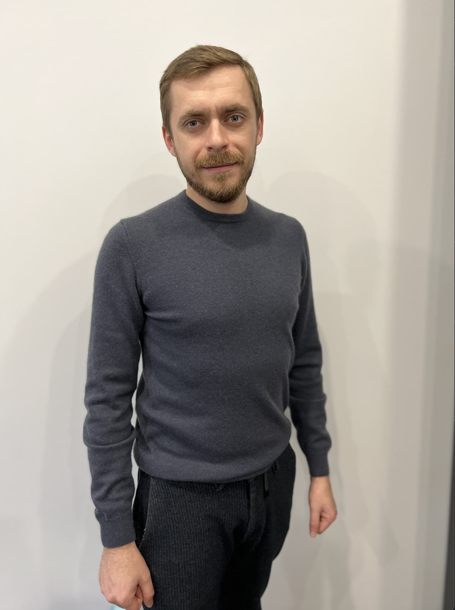
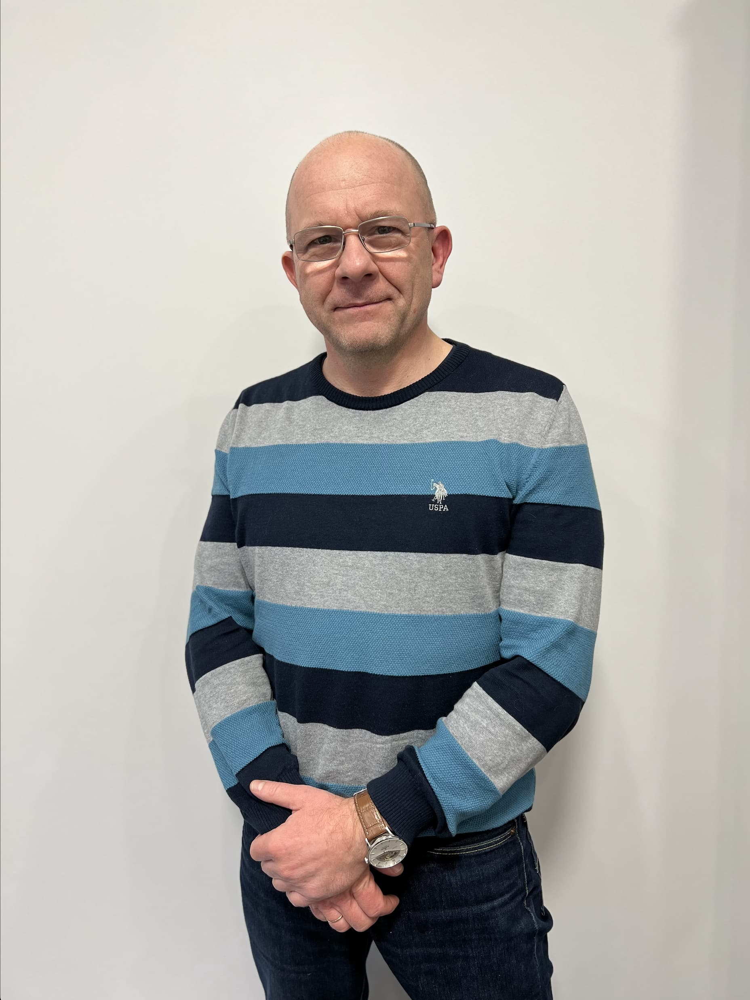

Благодійний фонд
“Сила у Єднанні”
Допомогти
Наша мета
Війна не завжди дозволяє навіть самій ефективній державі вжити вичерпних та своєчасних заходів до забезпечення військових підрозділів усім необхідним. Бойова обстановка подекуди ставить достатньо неочікувані завдання, що вимагають матеріального забезпечення, яке важко передбачити планом постачання військ на рівні штабів усіх рівнів. Не є секретом, що в бойовій обстановці обладнання швидко псується, знищується або втрачається. Отже, держава, яка б вона не була розумна та раціональна, не може передбачити та своєчасно забезпечити раптово виникаючи потреби військових, які воюють на передньому краю. Великі благодійні фонди, як правило, спрямовують свої зусилля на, так би мовити, стратегичні потреби, на кшталт збору коштів та закупівлі ударних безпілотників та розвідувальних супутників, що є дуже важливим для війська. Водночас, невеликі благодійні фонди, які мають зв’язок з окремими підрозділами, володіють інформацією про щоденні потреби кожного солдата та здатні діяти в оперативній площині, забезпечуючи достатньо швидку акумуляцію коштів та забезпечення за їх рахунок щоденних потреб військових. Це такі потреби як ремонт та обслуговування техніки, не лише штатної, але і наданої волонтерами, забезпечення засобами зв’язку, оптики, обігріву тощо. На цей час свідомими та небайдужими громадянами в Україні створено безліч таких невеликих фондів. Всі вони потрібні і всі роблять свою справу – свій маленький вклад у перемогу людяності над звіриною люттю агресора. Такий зараз час. Час захистити всіма можливими засобами незалежність України та Європи, стабільність у всьому світі. Саме з цієї причини ми вирішили створити Благодійний фонд «Сила у єднанні», зусилля якого спрямувати на підтримку 5-го окремого штурмового полку та 204-го окремого батальйону територіальної оборони, які прямо зараз ведуть тяжкі бої з російським агресором на сході України в Донецькій області. Зазначені підрозділи несуть важкі втрати на цій жорстокій війні. Нашою ціллю є допомогти їм залишитися живими та перемогти. Ще до створення фонду, нами та нашими друзями за власні кошти придбано та передано військовим 50 бронежилетів, понад 5000 консервів, медичний автомобіль, матеріали для обладнання позицій. Зараз вирішується питання про придбання за власний кошт генераторів та 3G модему Starlink. Водночас, залучення коштів ширшого кола небайдужих не лише в Україні, але і за її межами, виведе нашу допомогу на новий рівень та внесе значно вагоміший внесок у надважливішу для людства справу Збройних Сил України та всього українського народу!
Засновники
-

Олександр Кобилянський
Адвокат
-

Павло Лівочка
Адвокат
Про нас
Ми - українські юристи Кобилянський Олександр та Лівочка Павло. В 2019 році ми заснували адвокатське об’єднання і розвивали свій бізнес у м. Києві. Але 24.02.2022 з початком повномасштабної російської агресії наше життя, як і життя всієї країни зазнало шокуючих змін. Руський мір, одурманений ідеєю своєї зверхності, прийшов на нашу землю. З ракетами, пушками і танками. Сіючи повсюди смерть та руйнування, вбиваючи дітей та ґвалтуючи жінок, знищуючи цивільну інфраструктуру, стираючи з лиця землі цілі міста, насаджаючи свої цінності, культуру та мову. Їх лідери взагалі заперечують право українців бути українцями. З підконтрольних їхній владі телеканалів лунають заклики вбивати українських дітей. В ХХІ віці Європа стикнулася з відвертим геноцидом багатомільйонного українського народу. Наші діти у п’ятирічному віці вже ділять життя на до війни та після її початку. Сховатись та втекти від російської орди неможливо. Втихомирювати марно. Вони не зважають на відстань та державні кордони. Прагнення людей жити гідно та вільно не має для них цінності. Єдиний вихід – дати агресору по зубах так, щоб він надовго забув мріяти про свою зверхність та підкорення інших націй та народів. Отже, зараз постало питання існування українського народу як такого. Нашою метою стала участь у відсічі, яку надають агресору Збройні Сили України. Кобилянський Олександр відразу поринув у волонтерську діяльність. Лівочка Павло, маючи бойовий досвід з 2014 року, з першого дня повномасштабного вторгнення 24.02.2022, коли ворог був на околицях Києва, не вагаючись, вступив до лав територіальної оборони Києва та разом зі своїми побратимами у складі 204-го окремого батальйону у березні 2022 взяв участь у боях з оборони Києва та звільнення Київської області. Приймав участь у боях за село Мощун, на якому ворог зосередив звої зусилля, прориваючись до української столиці, яку вони мали намір взяти за два дні. Наразі ми вирішили поєднати свої зусилля та створити Благодійний фонд «Сила у єднанні», зусилля якого спрямувати на підтримку 5-го окремого штурмового полку та 204-го окремого батальйону територіальної оборони Збройних Сил України, в яких проходять службу наші побратими, які прямо зараз ведуть тяжкі бої з російським агресором на сході України в Донецькій області. Зазначені підрозділи несуть важкі втрати на цій жорстокій війні. Наша мета - допомогти їм залишитися живими та перемогти. В перспективі ми маємо намір збільшити охват військових частин нашою допомогою. Все залежить від результатів діяльності фонду. Ще до створення фонду, нами та нашими друзями за власні кошти придбано та передано військовим 50 бронежилетів, понад 5000 консервів, безліч матеріалів для обладнання позицій, медичний автомобіль. Зараз вирішується питання про придбання за власні кошти генераторів та 3G модему Starlink. Водночас, залучення коштів ширшого кола небайдужих не лише в Україні, але і за її межами, виведе нашу допомогу на новий рівень та внесе значно вагоміший внесок у надважливішу для людства справу Збройних Сил України та всього українського народу. Дякуємо, що Ви з нами. Слава Україні! Слава Збройним Силам України!